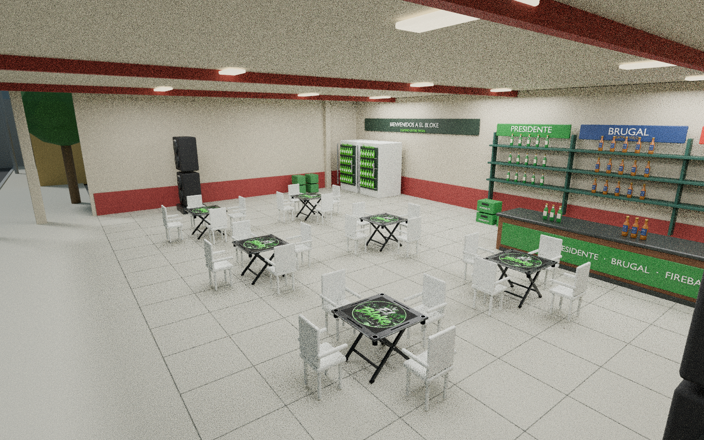
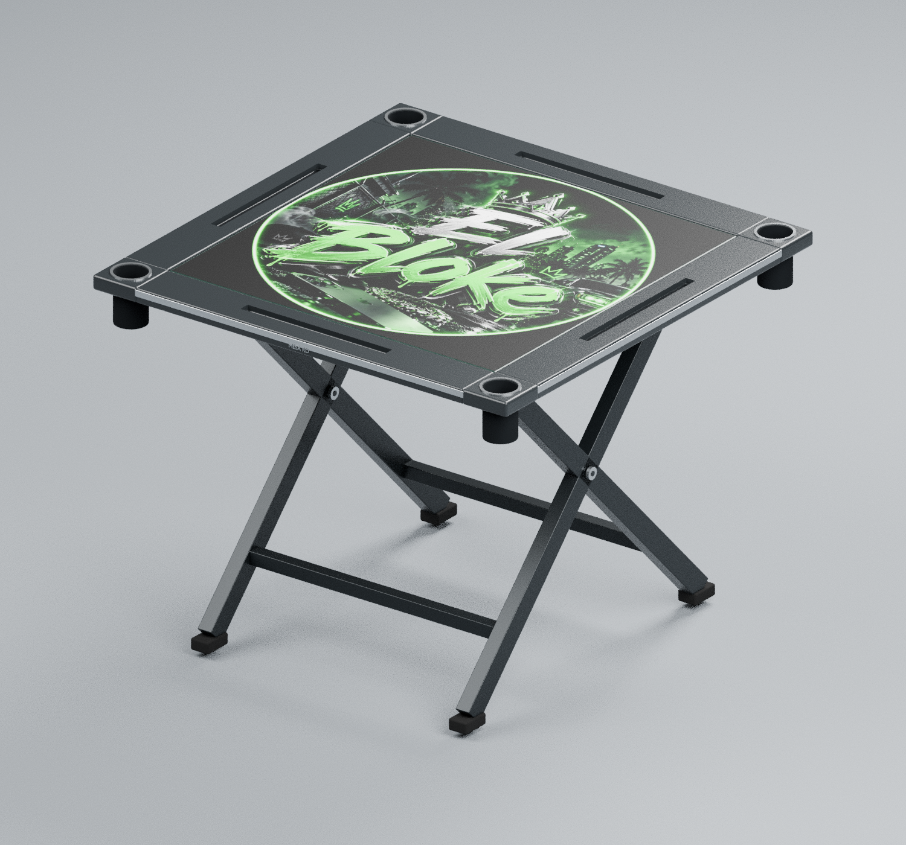

EL BARRIO
Colmado dominicano
Seis mesas, 24 sillas vacías, bocinas, bebidas y una calle para recorrer.
Recorrer el colmadoVer la distribución de las mesasExplora el barrio y revisa las piezas del proyecto.

Seis mesas, 24 sillas vacías, bocinas, bebidas y una calle para recorrer.
Recorrer el colmadoVer la distribución de las mesasUna demostración de ocho segundos con una ficha de prueba y la mesa EL BLOKE.
Revisar la animaciónAbrir el video
Logo original, patas cruzadas, cuatro portavasos y una ranura por jugador.
Descargar mesa 3DVer el tablero desde arriba